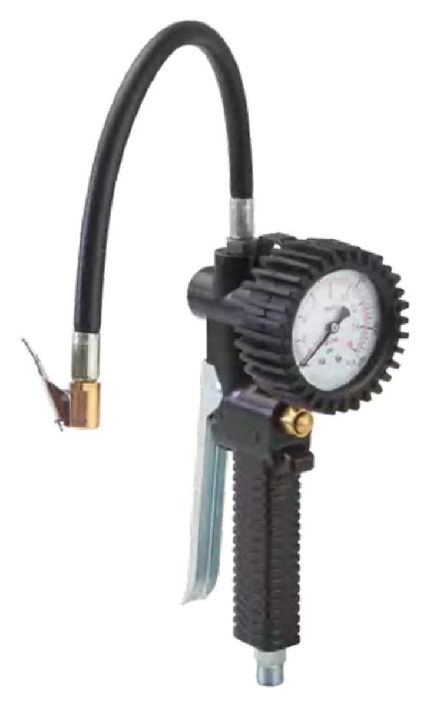

GROZ · Air Handling
Tyre Inflator Gauge for Cars
CAT NR TIG/M/12/BSP · ORD NR 61310
| CAT NR (catalogue number) | TIG/M/12/BSP |
|---|---|
| ORD NR (order number) | 61310 |
| Box quantity | 10 |
| Variant (printed column) | BSP THREADS |
| Description (printed in table) | 12" (300 mm) flexible hose with straight chuck; Analog Gauge |
Open in the catalogue The catalogue PDF, page 353
From the GROZ Fluid Handling CC-07 catalogue. Not yet verified: these details were read from the printed catalogue automatically; check the catalogue page before ordering.